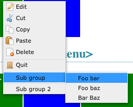
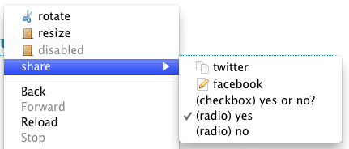

 
The contextMenu Plugin was designed for web applications in need of menus on a possibly large amount of objects. Unlike implementations as a beautiful site's or trendskitchens' this contextMenu treats the menu as the primary object. That means, that a single menu is defined that can be used by multiple objects. Unlike the mentioned plugins, contextMenu doesn't need to bind itself to triggering objects. This allows injecting and removing triggers without having to re-initialize or update contextMenu.
contextMenu can provide a simple list of clickable commands, or offer an in-menu form. This makes very simple attribute modification possible. See the input example.
Once a menu is registered, it cannot be altered. That means no commands can be added or removed from the menu. This allows contextMenu to keep a single definition in memory, which enables it to work with hundreds of trigger objects. contextMenu knows the two callbacks show and hide which can be used to update the state of commands within the menu. This allows en/disabling commands, changing icons or updating the values of contained <input> elements.
As of version 1.5 context menus can be created dynamically. That means the afore described behavior (once created, cannot be altered) still applies - but can be circumvented. Menus can be created on demand and they can be different depending on the triggering element.
And, yes, the icons provided in this demo are taken from a beautiful site, as well as some implementation ideas...
$.contextMenu is published under the MIT license and GPL v3.